My research is on economic data science—the application of data science (including AI, natural language processing, and modelling) to answer economic questions. I’m particularly interested in public policy, macroeconomic modelling (including forecasting), the interactions between households, firms, and the financial system, and productivity.
Journal articles
-
Kalamara, Eleni, Arthur Turrell, Chris Redl, George Kapetanios, and Sujit Kapadia. "Making text count: economic forecasting using newspaper text." Journal of Applied Econometrics 37, no. 5 (2022): 896-919. doi:
10.1002/jae.2907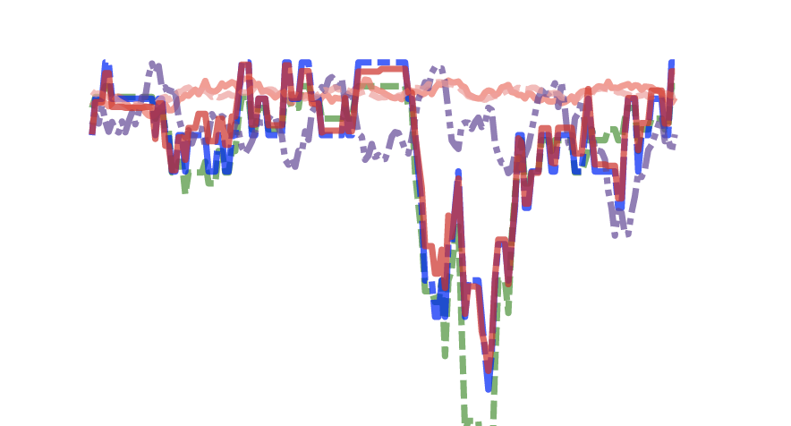 -
Turrell, A., Speigner, B., Copple, D., Djumalieva, J. and Thurgood, J., 2021. Is the UK’s productivity puzzle mostly driven by occupational mismatch? An analysis using big data on job vacancies. Labour Economics, 71, p.102013. doi:
10.1016/j.labeco.2021.102013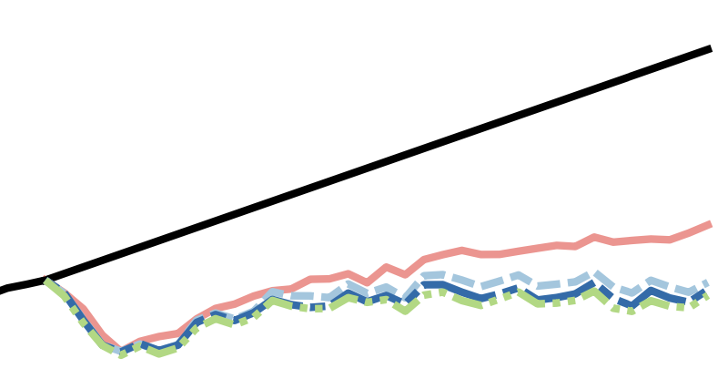 -
Haldane, Andrew G., and Arthur E. Turrell. "Drawing on different disciplines: macroeconomic agent-based models." Journal of Evolutionary Economics 29 (2019): 39-66. doi:
10.1007/s00191-018-0557-5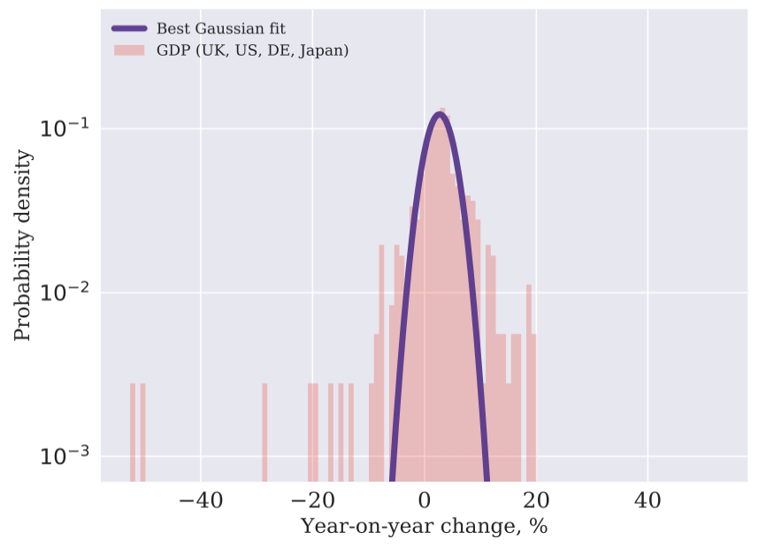 -
Haldane, Andrew G., and Arthur E. Turrell. "An interdisciplinary model for macroeconomics." Oxford Review of Economic Policy 34, no. 1-2 (2018): 219-251. doi:
10.1093/oxrep/grx051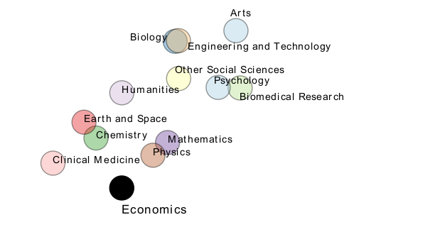 -
Braun-Munzinger, Karen, Z. Liu, and A. E. Turrell. "An agent-based model of corporate bond trading." Quantitative Finance 18, no. 4 (2018): 591-608. doi:
10.1080/14697688.2017.1380310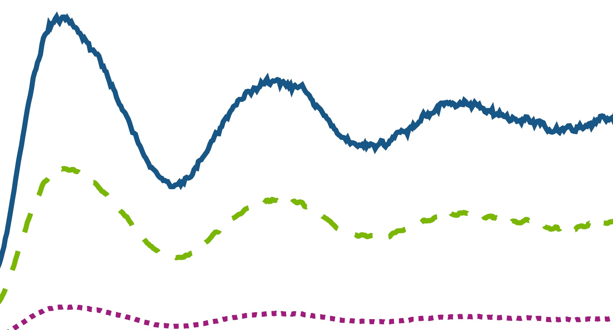 -
Turrell, A. E., M. Sherlock, and S. J. Rose. "Efficient evaluation of collisional energy transfer terms for plasma particle simulations." Journal of Plasma Physics 82, no. 1 (2016): 905820107. doi:
10.1017/S0022377816000131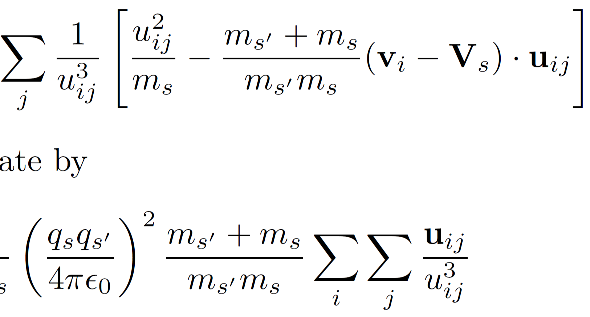 -
Turrell, A. E., M. Sherlock, and S. J. Rose. "Ultrafast collisional ion heating by electrostatic shocks." Nature Communications 6, no. 1 (2015): 8905. doi:
10.1038/ncomms9905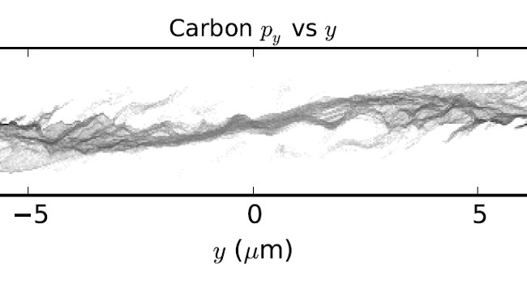 -
Turrell, Arthur E., Mark Sherlock, and Steven J. Rose. "Self-consistent inclusion of classical large-angle Coulomb collisions in plasma Monte Carlo simulations." Journal of Computational Physics 299 (2015): 144-155. doi:
10.1016/j.jcp.2015.06.034 -
Turrell, Arthur E., Mark Sherlock, and Steven J. Rose. "A Monte Carlo algorithm for degenerate plasmas." Journal of Computational Physics 249 (2013): 13-21. doi:
10.1016/j.jcp.2013.03.052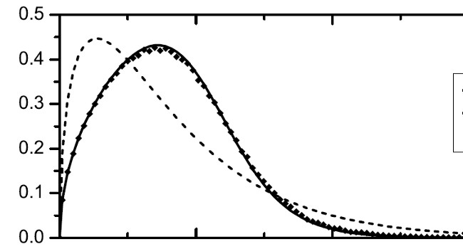
Working papers
-
Botta, Federico, Robin Lovelace, Laura Gilbert, and Arthur Turrell. "Packaging code for reproducible research in the public sector." arXiv e-prints (2022), arXiv:2305.16205. doi:
10.48550/arXiv.2305.16205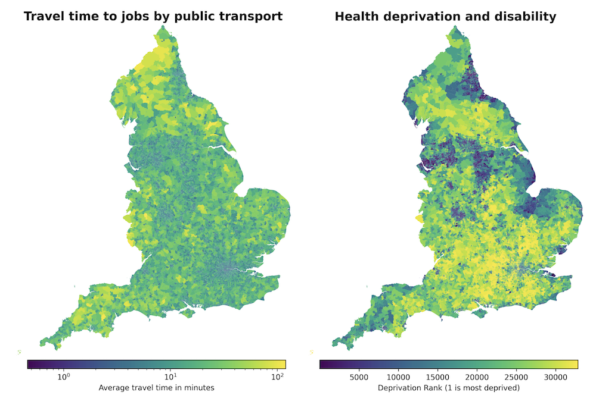 -
Draca, Mirko, Emma Duchini, Roland Rathelot, Arthur Turrell, and Giulia Vattuone. Revolution in Progress? The Rise of Remote Work in the UK. University of Warwick, Department of Economics, 2022.
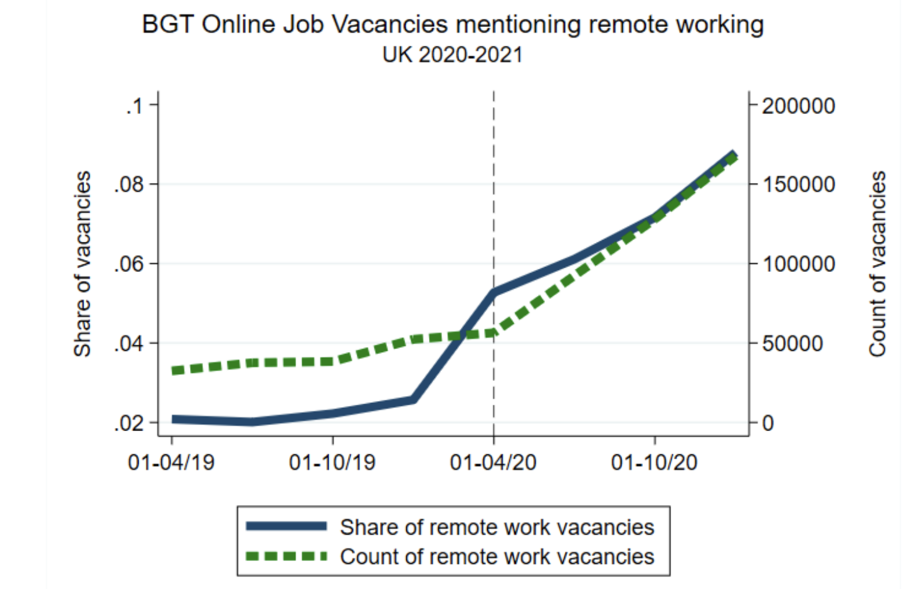 -
Duchini, Emma, Stefania Simion, Arthur Turrell, and Jack Blundell. "Pay Transparency and Gender Equality." arXiv e-prints (2020), arxiv:2006.16099. doi:
10.48550/arXiv.2006.16099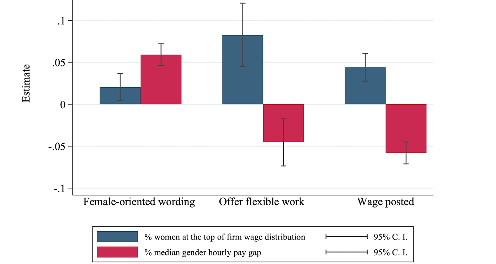
Book chapters
-
Turrell, Arthur, Bradley Speigner, Jyldyz Djumalieva, David Copple, and James Thurgood. "6. Transforming Naturally Occurring Text Data into Economic Statistics." In Big Data for Twenty-First-Century Economic Statistics, pp. 173-208. University of Chicago Press, 2022. doi:
10.7208/chicago/9780226801391-008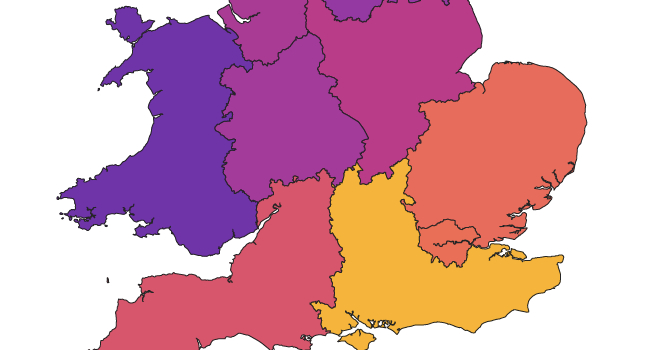 -
Turrell, Arthur. "Agent-based models: understanding the economy from the bottom up" In Quarterly Bulletin, Q4. Bank of England, 2016.
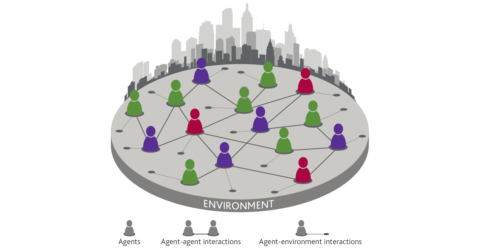
Dormant working papers
-
Hill, Edward, Marco Bardoscia, and Arthur Turrell. "Solving heterogeneous general equilibrium economic models with deep reinforcement learning." arXiv arXiv:2103.16977 (2021).
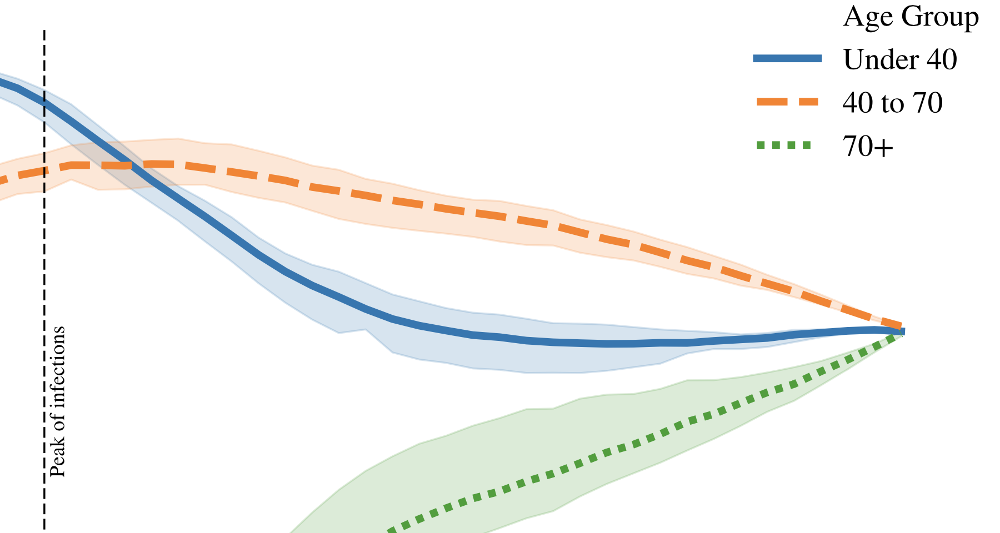 -
Turrell, Arthur, James Thurgood, David Copple, Jyldyz Djumalieva, and Bradley Speigner. "Using online job vacancies to understand the UK labour market from the bottom-up." Bank of England Staff Working Papers 742 (2018).